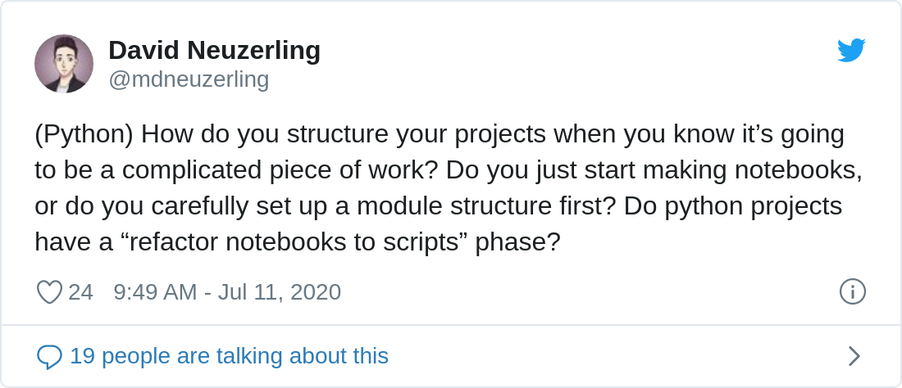

I’m obsessed with how to structure a data science project. The time I spend worrying about project structure would be better spent on actually writing code. Here’s my preferred R workflow, and a few notes on Python as well.
In R, the package is “the fundamental unit of shareable code”.
At rstudio::conf 2020, Hadley gave a rule of thumb for when to create a package, which I’ll paraphrase: “When you copy and paste a block of code three times, make a function. When you do that three times, make a package.” My rule of thumb is stricter: if I might come back to this project tomorrow, it should be a package. I’m a big fan of this workflow, and I use it for just about everything.
People have told me that making a package seems like a massive learning curve. That’s fair. Packages look strange from the outside, with a whole bunch of bizarre files. Code is lumped together into a single directory, except for the stuff in inst/, and it’s hard to tell what’s going on with inst/. Imagine being an R novice, and trying to find the code for your favourite function somewhere in a git repository. This stuff is hard, but there are tools out there that make the rewards greater than the costs.
First things first: R packages exist independently of CRAN. The packages I make are specific to a project, and often specific to a single data set. They’re never going to be submitted to CRAN. Most don’t even make it onto GitHub. R packages can be just a way to organise code, nothing more. By following a certain structure and a few rules we get to benefit from a whole bunch of tools designed just for packages.
Package structure is thoroughly explained in Hadley’s book, but here are the simplified requirements:
R/ directory. The functions in here will be available when the package is loaded.tests/ directory.DESCRIPTION file.NAMESPACE file and a man/ directory, but these can be ignored; they’re generated automatically from Roxygen strings.inst/ directory.Most of the intricacies of package development can be outsourced to devtools and usethis. I never have to think about how to set up the structure of a package: I type usethis::create_package("packagename") and it’s all set up for me. I never have to think about where to stick my test files: usethis::create_test("file-name") does it for me. The LICENSE requirement is a bit annoying, but usethis::use_mit_license() can immediately set me up with a permissive licence.1
Maybe the end result of my project is an R Markdown report. Instead of filling the R Markdown file with helper functions, I put all of those functions in files in the R/ directory. I put my R Markdown file in the inst/ directory, and in it I load the functions of the package. I don’t even need to install the package: I can use devtools::load_all() to make all of those functions available to me.
I’ll repeat that: a package workflow can be used without ever installing the package. For almost all personal packages, devtools::load_all() is good enough.
A package structure does require a bit more thought, but what you get in return makes it worthwhile. In exchange for following the structure and the rules, I get:
usethis::use_package()) but in exchange I can see them listed all in one file, rather than being a bunch of library calls scattered throughout multiple files. This is also one of the ways that renv can pick up on dependencies, to make reproducibility easier.Roxygen2. By putting some special comments above my functions, I can generate proper R documentation. It’s satisfying to type ?my_custom_function and see help material. Even if I’m the only one who will use this code, that documentation make my life easier. Hint: use RStudio to generate Roxygen skeletons!testthat. Unit tests save time, and this is the hill I will die on. There’s a bit of set-up involved, but it’s all taken care of the first time a test is created with usethis::use_test().rcmdcheck::rcmdcheck() (also available as a button in RStudio) not only runs my unit tests, but also looks for issues with portability, missing dependency declarations, misplaced characters, and much more. I often run this when I’m developing my functions, and I also set it up to run automatically every time I push code to GitHub. This is a big deal — if I break a unit test or do something else wrong, I want to know about it!I took note of every function and shortcut I use when following a package workflow. Every function below links to its documentation:
| Operation | Function | Notes |
|---|---|---|
| Create a new package | usethis::create_package |
Also creates an RStudio project if you’re using RStudio |
| Create a new function | usethis::use_r |
If the file exists, will open it |
| Create a new test file | usethis::use_test |
File names are prefixed with “test-”. Will also set up test infrastructure if it doesn’t already exist. |
| Declare a dependency | usethis::use_package |
Use the type = "Suggests" argument for suggested packages |
| Source all functions | devtools::load_all |
RStudio default keyboard shortcut: Ctrl/⌘ + Shift + L |
| Build documentation | devtools::document |
RStudio default keyboard shortcut: Ctrl/⌘ + Shift + D |
| Set up environment to pin package dependencies | renv::init |
renv is extremely important for any piece of work that needs to be reproducible |
| Capture or update package dependencies | renv::snapshot |
This is in addition to the dependencies in the DESCRIPTION file, since it captures all required packages along with their installed versions |
| Run tests | devtools::test |
UI option: In RStudio, look for the “Test package” option below the “More” button in the “Build” tab. RStudio default keyboard shortcut: Ctrl/⌘ + Shift + T |
| Run tests in a specific file | devtools::test_file |
By default, will test the active file, or a file path can be provided. UI option: he test file in RStudio and look for the “Run Tests” button above the editor. |
| Run a full package check, including tests | rcmdcheck::rcmdcheck |
UI option: In Rstudio, look for the “Check” button in the “Build” tab |
R code can be served as an API with the plumber package, and this is compatible with a package workflow. James Blair gave a great talk on Practical Plumber Patterns at rstudio::conf 2020 where he presented an R package combined with plumber. One of the functions in the package actually starts the API. The source code is available on GitHub
I use Python almost every day, but I hadn’t given a lot of thought on how to structure a Python project. I reached out to Twitter to see if there was a standard.

Tweet by mdneuzerling: (Python) How do you structure your projects when you know it’s going to be a complicated piece of work? Do you just start making notebooks, or do you carefully set up a module structure first? Do python projects have a “refactor notebooks to scripts” phase?
Thank you to everyone who responded to this! I learnt a lot.
The responses are worth reading. There’s a range of answers, but the general theme is about “promoting” code from an informal notebook to a formal module. Some people start with a module structure, which they install into their system, and then use notebooks for exploration. Some people start with notebooks, and eventually transition their work into something with more structure.
There are tools in Python that make projects a bit easier:
pip install -e install an “editable” version of a local module. This means that changes to the local code are immediately reflected.I’m particularly keen to check out Cookiecutter. It seems like it fills a purpose in Python similar to that of the usethis package in R.
Personally, though, I still can’t quite grok notebooks. I remember using them way back in the day when I was using SageMath, but now they just don’t click with me. The idea that I have to switch a cell to markdown still throws me off, and I find myself reaching for a repl that doesn’t exist. Mentally I tell myself, “I’ll create a cell which I’ll use just for quick calculations”, and my experience is that this is a recipe for a notebook filled with junk code.
I still use notebooks when I’m working in Python — Python users tend to be wedded to them, and I don’t want to be the one going against the grain instead of collaborating. In the past I’ve used Spyder or VSCode for Python development. Lately I’ve even be experimenting with RStudio as a Python IDE, and it does pretty well.
devtools::session_info()## ─ Session info ───────────────────────────────────────────────────────────────
## setting value
## version R version 4.1.0 (2021-05-18)
## os macOS Big Sur 11.3
## system aarch64, darwin20
## ui X11
## language (EN)
## collate en_AU.UTF-8
## ctype en_AU.UTF-8
## tz Australia/Melbourne
## date 2021-05-30
##
## ─ Packages ───────────────────────────────────────────────────────────────────
## package * version date lib source
## blogdown 1.3 2021-04-14 [1] CRAN (R 4.1.0)
## bookdown 0.22 2021-04-22 [1] CRAN (R 4.1.0)
## bslib 0.2.5.1 2021-05-18 [1] CRAN (R 4.1.0)
## cachem 1.0.4 2021-02-13 [1] CRAN (R 4.1.0)
## callr 3.7.0 2021-04-20 [1] CRAN (R 4.1.0)
## cli 2.5.0 2021-04-26 [1] CRAN (R 4.1.0)
## crayon 1.4.1 2021-02-08 [1] CRAN (R 4.1.0)
## desc 1.3.0 2021-03-05 [1] CRAN (R 4.1.0)
## devtools 2.4.0 2021-04-07 [1] CRAN (R 4.1.0)
## digest 0.6.27 2020-10-24 [1] CRAN (R 4.1.0)
## ellipsis 0.3.2 2021-04-29 [1] CRAN (R 4.1.0)
## evaluate 0.14 2019-05-28 [1] CRAN (R 4.1.0)
## fastmap 1.1.0 2021-01-25 [1] CRAN (R 4.1.0)
## fs 1.5.0 2020-07-31 [1] CRAN (R 4.1.0)
## glue 1.4.2 2020-08-27 [1] CRAN (R 4.1.0)
## htmltools 0.5.1.1 2021-01-22 [1] CRAN (R 4.1.0)
## jquerylib 0.1.4 2021-04-26 [1] CRAN (R 4.1.0)
## jsonlite 1.7.2 2020-12-09 [1] CRAN (R 4.1.0)
## knitr 1.33 2021-04-24 [1] CRAN (R 4.1.0)
## lifecycle 1.0.0 2021-02-15 [1] CRAN (R 4.1.0)
## magrittr 2.0.1 2020-11-17 [1] CRAN (R 4.1.0)
## memoise 2.0.0 2021-01-26 [1] CRAN (R 4.1.0)
## pkgbuild 1.2.0 2020-12-15 [1] CRAN (R 4.1.0)
## pkgload 1.2.1 2021-04-06 [1] CRAN (R 4.1.0)
## prettyunits 1.1.1 2020-01-24 [1] CRAN (R 4.1.0)
## processx 3.5.2 2021-04-30 [1] CRAN (R 4.1.0)
## ps 1.6.0 2021-02-28 [1] CRAN (R 4.1.0)
## purrr 0.3.4 2020-04-17 [1] CRAN (R 4.1.0)
## R6 2.5.0 2020-10-28 [1] CRAN (R 4.1.0)
## remotes 2.3.0 2021-04-01 [1] CRAN (R 4.1.0)
## rlang 0.4.11 2021-04-30 [1] CRAN (R 4.1.0)
## rmarkdown 2.8 2021-05-07 [1] CRAN (R 4.1.0)
## rprojroot 2.0.2 2020-11-15 [1] CRAN (R 4.1.0)
## sass 0.4.0 2021-05-12 [1] CRAN (R 4.1.0)
## sessioninfo 1.1.1 2018-11-05 [1] CRAN (R 4.1.0)
## stringi 1.6.1 2021-05-10 [1] CRAN (R 4.1.0)
## stringr 1.4.0 2019-02-10 [1] CRAN (R 4.1.0)
## testthat 3.0.2 2021-02-14 [1] CRAN (R 4.1.0)
## usethis 2.0.1 2021-02-10 [1] CRAN (R 4.1.0)
## withr 2.4.2 2021-04-18 [1] CRAN (R 4.1.0)
## xfun 0.22 2021-03-11 [1] CRAN (R 4.1.0)
## yaml 2.2.1 2020-02-01 [1] CRAN (R 4.1.0)
##
## [1] /Library/Frameworks/R.framework/Versions/4.1-arm64/Resources/libraryFor closed-source packages, create a file that says “Proprietary. Property of DESCRIPTION.↩︎